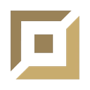

Basic Knowledge
Riot Games is the studio behind League of Legends. League of Legends is a MOBA (Multiplayer Online Battle Arena) and belongs to the genre of Realtime strategy. It is a massive game with a player base reaching from 22 million to over 100 million monthly active users. Riot Games also made an animated series on Netflix which i really recommend even if you dont play League of Legends. League of Legends is free to play. In the shop you can buy cosmetics like champion skins, but those aren't neccessary. They also doens't change how the champions work, cuz its only cosmetic.
A game lasts around 25-35 minutes on average. There are 2 teams fighting for the win. Each team consists of 5 players, each taking a specific role that is explained in the next section. Every player has to select 1 champion out of 172 available champions. Each year new champions are getting added to the pool. Each champion got a unique passive and 4 different spells. In addition to that the player can select 2 out of 9 summoner spells, except for the Jungler, he can only select 1 because the spell "smite" is irreplaceable and fixed.
League of Legends takes a big part in the e-sports scene. The price pool for the world championship in 2025 was $5.000.000 USD. In the finals the viewership achieved a peak of over 6.7 million viewers.
Toplane
Toplane is located on the top of the map. In Toplane most champions used are bruiser/juggernaut or tanks, but since there are no limitations to picking your champion, some are playing squishy adc or mages aswell. Often they are left alone until they develop into a problem! Also there will be a lot of fighting.
Jungle
Jungle is and will always be one of the most impactful lanes. They can impact every other lane the easiest, because u arent bound to any specific lane. On the map there are many places between the lanes. In those places jungle camps are spawning and the junglers job is to clear them to get money and exp.
Midlane
Midlane is located in the middle of the map, its the shortest lane to get to. Usually mages and asssassin champions are played there but as mentioned in Toplane, there arent restrictions so players actually started playing some Toplane tanks in Midlane. Currently Midlane got a more utility role in my opinion.
Botlane (AD/AP Carry)

AD/AP Carry goes to Bottom Lane together with their Support. It is one of the strongest but also one of the most frustrating lanes, because its highly teamreliant and hard to execute. Most of the time AD Carries or mages with really good scaling are played there. They deal the most damage if you have enough items, but how fast you reach that point, depends on some factors.
Support
The support goes to Bottom Lane together with the AD/AP Carry. There are 3 types of supports that are mainly played there. Enchanter(Focus on healing or shielding their carry), Engage(tanky supports that play the frontline role and start engage in a fight) or mages(mages that got longer range to poke and harrass the enemy carry). Supports dont need to farm, which allows them to be more mobile around the map similar to jungle but not as much.
Summoner's Rift Map

Source: https://oyster.ignimgs.com/mediawiki/apis.ign.com/league-of-legends/a/ac/Summonerriftmaplanes.jpg?width=1280